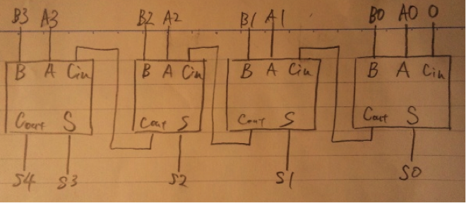

スタートノードから、あるノードｎを通ってゴールノードまでたどり着くまでの最短経路を考える。この時の最短経路をf(n)とおき、スタートノードからノードnまでの最短距離をg(n)。ノードｎからゴールノードまでの最短距離をh(n)とすると、
f(n) = g(n) + h(n) と表すことが可能。
実際にはg(n)とh(n)は予め知ることは不可能であるので、推定値g*(n)、h*(n)に置換えると、
f*(n) = g*(n) + h*(n) と表せる。
g*(n)は探索過程で推定値を求められる。
h*(n)は問題に応じて適当な推定値を与える。
ただし h*(n) <= h(n) でなければ正しい解が出る保証は無い。
この方法で小さい推定コストを持つノードを選択しながらスタートノードからゴールノードまでの最短距離を求める方法を、A*アルゴリズムと呼ぶ。
推定値の決め方を間違えると、最適な解を見つけることが保証出来なくなる。
h*(n)が実際の最短距離h(n)よりも大きい値の場合、同時にf*(n)が実際の最短距離f(n)よりも大きくなる可能性がある。f*(n)同士を比較して探索を進めるA*アルゴリズムではこれは致命的であり、最適解を見つけることが保証出来なり、冗長的な処理が多くなってしまう。したがってh*(n)は
0<= h*(n) <=h(n)
の範囲であることが求められる。
ダイクストラ法は全てにおいてh*(n)が０で場合であるA*アルゴリズムと同一である。現時点で分かるg(n)のみを頼りに、現時点で最も近いノードを順次選択していく貪欲法となる。この方法にh*(n)が加わることにより、h*(n)の精度が高ければ高いほど最短距離のルートの探索処理が早まり、より高速にf(n)を求めることが可能となる。
スーパースカラはCPU内部に複数のパイプラインを用意し、ハードウェア自らが並列性を検出してパイプラインの各ステージを命令レベルで並列処理をするコンピューターアーキテクチャである。
VLIWは全ての並列性をコンパイラが検出し、実行前に予め依存の問題を静的に排除し、１つの命令の中に複数の演算を入れることで並列処理を実現する。
・共有メモリ型マルチプロセッッサ
プロセッサはそれぞれ独立しているが、メモリは共有する構成方法。同一のメモリを共有する点でプロセッサ同士の結びつきが強いので、密結合マルチプロセッサとも言う。共有メモリ上に自分のみがアクセス可能なローカルメモリ領域を取る方式と、取らない方式にさらに分類出来る。共有メモリ上にあるデータは全プロセッサが自分のデータとして読み書き可能であるので、プロセッサ間でのデータ転送をする必要が無い。
・分散メモリ型マルチプロセッサ
個別にメモリを持ったプロセッサ同士をネットワークで接続した構成方法。それぞれが個別のメモリを持つ点でプロセッサ同士の結びつきが弱いので、疎結合プロセッサとも言う。各プロセッサが他のプロセッサのメモリに直接アクセスすることは不可能であり、データの送受信が必要となってしまう。ネットワークを介した独立した複数のコンピューターによる並列計算が可能。
| 共有メモリ型 | 分散メモリ型 | |
| ハードウェアやソフトウェアの複雑さ | 共有メモリ上にあるデータの排他制御や、プロセッサ毎に共有メモリ上にローカル領域を持つ場合は他のプロセッサからのアクセスから保護する必要があるため複雑になる。 | ソフト的にもハード的にもメッセージの送受信を実現するためのシステムが必要になるため複雑。 |
| プログラミングの容易さ | データが全プロセッサで共有されているので、プロセッサ間でデータの送受信をする命令を記述する必要が無く容易。 | 他のメモリに目的とするデータがある場合はいちいちデータの送受信命令を記述する必要があるので、容易とは言えない。 |
| 安全性 | 全プロセッサが同一のメモリを共有するため、安全性は低い。保護機能に穴があれば、他のプロセッサのローカル領域を破壊しうる。また、資源の排他制御に欠陥があるとデッドロックが発生しうる。 | メモリがプロセッサ毎に分散しているため不意に自分のメモリデータが他のプロセッサによって書き換えられることは無く、比較的安全性は高い。つまり、プロセス間通信が排他制御の役割も担っているために安全性は高い。 |
・対称形マルチプロセッサ（SMP : Symmetric Multi Processor）
マルチプロセッサシステムにおいて、各プロセッサの用途が対等で、予め決められていないようなもの。処理能力、耐障害性の向上が望める。現在のOSのほとんどはSMPを採用している。
・非対称形マルチプロセッサ(AMP : Asymmetric Multi Processor)
マルチプロセッサシステムにおいて、各プロセッサの用途が別々に予め決められているもの。入出力処理専用のプロセッサや、演算処理専用のプロセッサなどに役割を分ける。SMPと比べると設計が容易で、OSのサポートも最小限で済む。シングルタスクのOSなどで良く使われていた。
num=100の場合はプロデューサ関数においてはif(num==NBUF)が成立するが、このif文が成立した直後にプリエンプションが発生し、コンシューマー関数に実行権が移されたとする。コンシューマー関数はitemを取り出しnumをデクリメントする。この処理の直後のif(num==NBUF-1)が成立するので、wakeup関数を実行するが、この時点ではプロデューサはまだsleep状態では無いので何も処理をすることなく次の処理へ進む。この後にプリエンプションが発生し再びプロデューサ関数に戻ると、if文判定直後から処理を再開するのですぐにsleep状態に移行するが、この後コンシューマー関数がwakeup関数を実行することは無いことが致命的な問題点である。
このままではwhile文に入って何もすることが無いプロセスも計算資源を与えられる無駄な機会が生じてしまうため、非常に非効率である。
#define NBUF 100 Semaphore N = 0; Semaphore M = NBUF; |
|
void producer(){
int item;
loop:
produce(&item);
P(M);
putItem(item);
V(N);
goto loop;
}
|
void consumer(){
int item;
loop:
P(N);
getItem(&item);
V(M);
consumeItem(item);
goto loop;
}
|
データ構造と、それを扱う手続きだけが公開され、内部手続が隠されたデータ型を抽象データ型と呼ぶ。例えば車の抽象データ型を考えると、データ構造として速度や移動方向の角度。手続きとしてブレーキやアクセルなどが考えられる。さらにこの型を継承することによって、車の性質を持つことを保証する新たなクラスを作ることが可能。オブジェクト指向の概念を取り入れた型である。
public class complex {
private int real , imaginary;
complex(int R, int I){
this.real = R;
this.imaginary = I;
}
int getR(){ return this.real; }
int getI(){ return this.imaginary; }
void setR(int X){ this.real = X;}
void setI(int X){ this.imaginary = X; }
complex complexAdd(complex a,complex b){
return complex( a.getR() + b.getR() , a.getI() + b.getI );
}
complex complexMult(complex a,complex b){
return complex( (a.getR()*b.getR()) – (a.getI()*b.getI()) ,
(a.getR()*b.getI()) – (a.getI() * b.getR() ) );
}
継承したクラスの性質を引き継ぎ、さらに新たな機能を付け加えることが可能。継承したクラスのメソッドや変数を再度宣言せずに再利用可能である。
・多重継承
複数のクラスを継承可能であること。
利点：複数のクラスを継承可能。
欠点：
class A{ void func();}
class B{ void func();}
class Ctest extend A , B{ }
例えば上記のようにクラスCtestがクラスAとBを継承しているとし、AとBはともにfunc()という同一名の関数を持っているとする。
このときCtestのインスタンスを生成し、
Ctest obj = new Ctest();
funcメソッドを実行したとする。
obj.func();
しかしながらfunc()はAとBのどちらの関数のことを示しているのかが分からず、実行不可能。
もうひとつの問題として、間接的に継承が重複してしまう問題がある。以下の例を考える。
class A{}
class P extend A{}
class Q extend A{}
class Test extend P,Q{}
この場合Testクラスは、PとQを通して間接的にクラスAを重複して継承しており、Aの変数にアクセスする場合にPとQのどちらのAの変数であるかが分からない。
この問題は１つに統一する仮想継承によって解決可能である。
以上のような難しい問題のために、多重継承を禁止している言語が多数存在する。
・単一継承
一つのクラスは、任意の一つのクラスの継承のみしか許可しないこと。
利点：多重継承で挙げた複雑な問題が発生せず、クラスの関係が単純で実装が容易。
欠点：一つのクラスのみの継承に制限されるため、複数のクラスを継承したい場合には、そのクラスのデータ構造や手続きを改めて宣言し直す必要があり非効率。
・長所
階層毎に部分的にプロトコルの入れ替えが可能となり、新しいシステムを実装したいような場合に、ある一部分のみ置換え、他は既存のシステムを用いることが可能。
・短所
階層毎に同じ処理をしなければいけないこともあり、非効率。
・７アプリケーション層
Webページの閲覧(HTTP)、電子メール(SMTP,POP)、ファイル転送(FTP)など、アプリケーションサービスを提供する。
・６プレゼンテーション層
ネットワーク上でのデータの意味を統一する。圧縮や解答、復号化など。
・５セッション層
通信の開始時や終了時などに送受信するデータの形式などを規定したもの。
・４トランスポート層
ネットワーク層で接続されたノード間で正しく受発信する機能と、受け取ったデータを目的のアプリケーションに渡す機能。TCP、UDPが有名。
・３ネットワーク層
データリンク層で接続された複数のネットワーク同士の通信仕様。IPプロトコルが広く使用されている。
・２データリンク層
物理層で直接接続されたノードの間の通信仕様。イーサネットプロトコルが広く使用されている。
・１物理層
物理的に機器や回線を繋いだり、切断したりする電気的仕様、機械的仕様を決定する。
グリッドコンピューティングを実現するためにはCPU、メモリ、ストレージなどのリソースの仮想化が必要であり、砂時計モデルはこの仮想化のレベルを５段階に分割して説明する。
・パケットスイッチング
データをパケット単位に分割して、別々に送信する通信方式。
・サーキットスイッチング
通信の間コネクションを保ち続けるコネクション型の通信方式。
？？？？
送受信端末又は、経路途中の機器のバッファを超えるような通信が行われた場合、溢れたパケットは破棄せざるを得ない。また、伝送途中でデータが壊れた場合も同様。
バッファにパケットが蓄積されている間の遅延や、パケットを受け取ったそれぞれの機器で必要な処理の時間など。
・リプルキャリ型4bit加算器
A3A2A1A0とB3B2B1B0の4bitを加算し、結果をS4S3S2S1S0に出力する全加算器を、上記１bit全加算器を４つ組み合わせることで構成すると、

上位桁の算出には下位桁の結果が必要であるので、ビット数に比例して上位の桁であればあるほど長い遅延が発生するのがリプルキャリ型の欠点である。１bitの算出に定数時間c掛かるとすると、n bit全加算器の計算時間は n*c であり、オーダ記法で表すと O( n ) となる。
・キャリルックアヘッド型
| X3*Y3 | X3+Y3 | X2*Y2 | X2+Y2 | X1*Y1 | X1+Y1 | X0*Y0 | X0+Y0 | C0 | C1 | C2 | C3 | C4 |
| 1 | 1 | 1 | ||||||||||
| 1 | 1 | |||||||||||
| 1 | 1 | 1 | 1 | |||||||||
| 1 | 1 | 1 | ||||||||||
| 1 | 1 | |||||||||||
| 1 | 1 | 1 | 1 | 1 | ||||||||
| 1 | 1 | 1 | 1 | |||||||||
| 1 | 1 | 1 | ||||||||||
| 1 | 1 | |||||||||||
| 1 | 1 | 1 | 1 | 1 | 1 | |||||||
| 1 | 1 | 1 | 1 | 1 | ||||||||
| 1 | 1 | 1 | 1 | |||||||||
| 1 | 1 | 1 | ||||||||||
| 1 | 1 |
S0 = X0 xor Y0 xor C0
S1 = X1 xor Y1 xor C1
…
(3)の真理値表と上記式を組み合わせる。